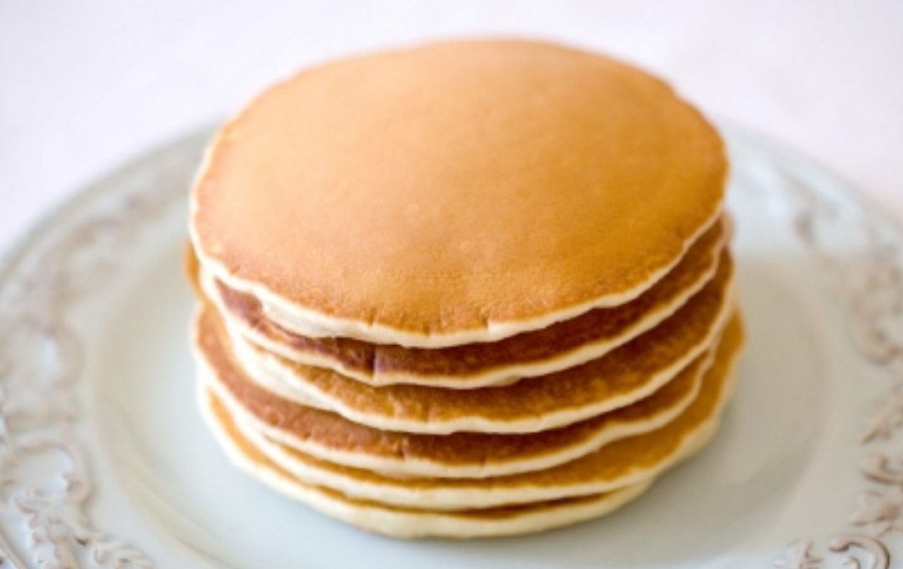

Панкейки
- 80гр масла
- 2 яйца
- 6 ст.л. сахара, щепотка соли
- 300гр муки
- 400мл молока
- ваниль, разрыхлитель
- Приготовление теста
- Разогреть масло, добавить сахар, соль и яйца. Перемешать.
Добавить молоко, муку, разрыхлитель, ваниль. Тесто готово.
- Жарка
- На разогретую сковороду наливаем ложку теста. Жарим до появления пузырьков (примерно 1 мин.), переворачиваем. Жарим еще 1 минуту.
- Примечание
- Очень вкусно с медом, вареньем, сгущенкой, нутеллой.
Так же в тесто можно добавлять кусочки сыра, замороженные ягоды или пластинки яблок.
Старая цена
